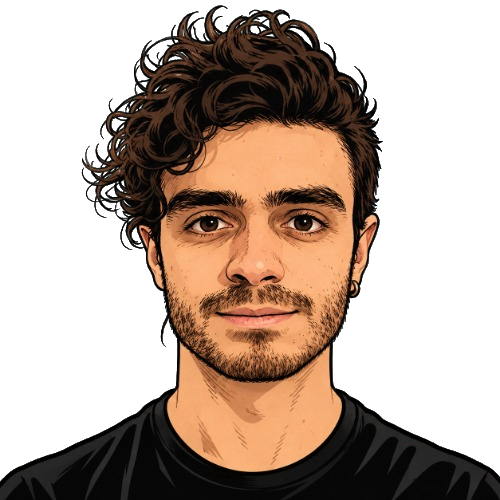

AI Engineer, DedalusJul 2022 - Present
Builds agentic AI tooling and RAG systems, and the infrastructure around them.

Modena, Emilia-Romagna, Italy
Hi, I'm Alessandro, an AI Engineer from a small village in Italy, building agentic AI tooling, RAG systems and the infrastructure behind them.
I also play D&D, often behind the DM screen, which turned out to be great training for explaining complicated things on stage at conferences. When I'm off the clock I read, play guitar and go trekking.
Curriculum vitae
AI Engineer, Modena, Emilia-Romagna, Italy.
Builds agentic AI tooling and RAG systems, and the infrastructure around them.
Developed Deep Learning and NLP models to match investors and researchers based on investment history and scientific publications.
Alma Mater Studiorum – Università di Bologna
University of Camerino
Posts